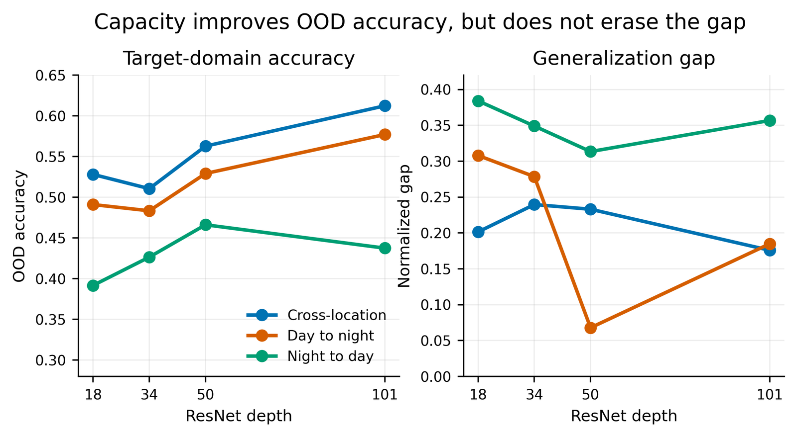
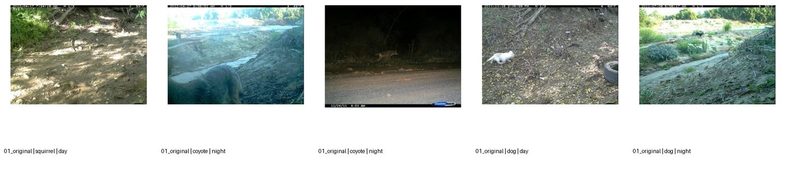
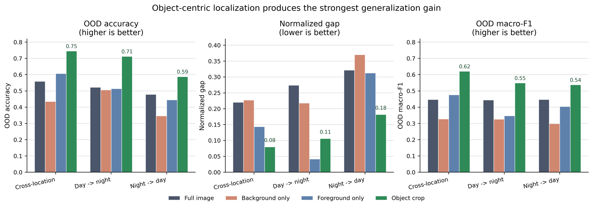

2026 · team course project · CCT-20
Why do wildlife classifiers fail at a new camera?
A controlled study of distribution shift on camera-trap images: 4 model sizes, 3 kinds of shift, 11 interventions.
Three shifts
Train in one setting, test in another.
Cross-location
Train on some camera sites, test on unseen ones. New backgrounds, same animals.
Day → night
Train on daylight frames, test on infrared night frames.
Night → day
The reverse. The hardest of the three.
Every condition is scored on out-of-distribution accuracy, macro-F1 and a normalised gap between in- and out-of-distribution accuracy.
Hypothesis 1 · capacity
Bigger models help, but the gap does not close.

The best model per shift (ResNet-101 or 50) still trails its in-distribution accuracy by a normalised gap of 0.18–0.31.
Hypothesis 2 · interventions
11 controlled changes, grouped by what they test.
Train-time diversification
Photometric randomisation, background perturbation, both combined. Mean change in OOD accuracy: about zero (−0.004).
Visibility enhancement
Gamma, CLAHE, both. Helps slightly only when applied at train and test time (+0.006); test-only hurts (−0.037).
Legacy probes
Background blur inside the box, brightness alignment. Mean change −0.056.
Object-centric diagnostics
Foreground only, background only, crop to the animal. This is where the signal was.
Try it · what the model sees
Switch the input and watch out-of-distribution accuracy move.

| Shift | OOD accuracy | vs full image |
|---|
Result
Cropping to the animal beats every other change.

Takeaway and limits
The model was reading the scenery.
- Background-only inputs still score well above chance, so the classifier leans on the site, not the animal.
- Diversifying the background at training time did not fix it; localising the animal did.
- Limit: crops use the dataset's annotated boxes, so +18.6 points is a diagnostic upper bound. A real system would need a detector in front.
- Limit: rare classes stay broken. Rodent has 128 training images and an F1 of 0 on every hard shift.
Engineering: config-driven PyTorch training, a SLURM job matrix over all 11 conditions on USC CARC GPUs, and automatic aggregation into these tables and figures.